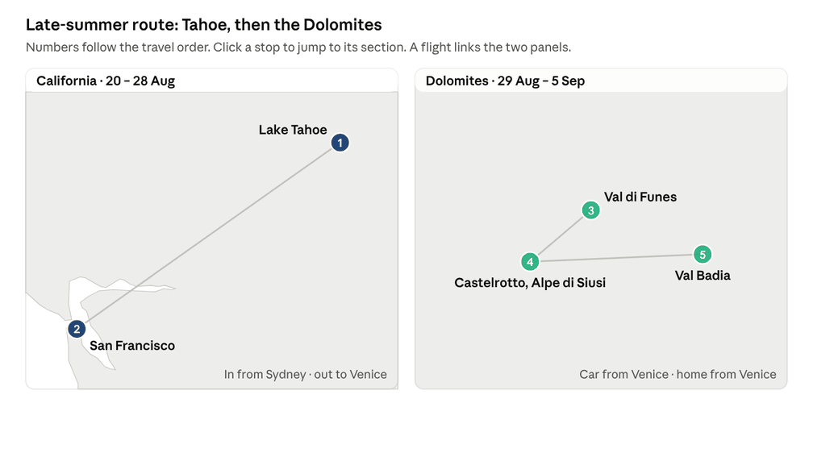

Decide on this after the spring trip. California comes first, while Tahoe is in high summer and the lake is warm enough to swim, then the Dolomites while the huts are open and the August crowds thin. Sydney → San Francisco → Venice → Sydney runs east the whole way, which suits a round-the-world ticket.

Leave: fly Qantas nonstop to San Francisco on Fri 20 Aug at 21:25, after work, landing at 17:45 the same Friday across the date line. Mon 23 Aug to Tue 7 Sep is 12 working days, all long service leave. You fly home from Venice on Sun 5 Sep and land in Sydney on Tue 7 Sep.
| # | Leg | Dates | Nights | Why it sits here |
|---|---|---|---|---|
| 1 | California | 20 – 28 Aug | 8 | First, while the lake is warmest; Kelly's house at Tahoe, then San Francisco for the flight to Europe, before the Labor Day weekend |
| 2 | Dolomites | 29 Aug – 5 Sep | 7 | Before most huts and lifts close around 20 Sep, in settled weather as the August crowds thin |
California, 20 – 28 Aug (hire car)
Kelly's house at Lake Tahoe is the base, then two nights in San Francisco before the flight to Europe.
| Dates | Base | Nights | What to do |
|---|---|---|---|
| 20 – 26 Aug | Lake Tahoe, Kelly's house | 6 | Land at San Francisco at 17:45 on Fri 20 Aug, sleep near the airport after the long flight, then hire a car and drive up on Saturday morning (about 3.5 h). High summer: about 27 °C, the lake warm enough to swim, walks on the Tahoe Rim Trail and into Desolation Wilderness. Late August is the peak of the Sierra fire season, so check the air quality and fire maps before you go |
| 26 – 28 Aug | San Francisco | 2 | Drive or take the train down (about 3.5 h). The Lands End coastal trail, the Mission, the Ferry Building |
Sat 28 Aug: fly San Francisco to Venice overnight through a European hub, landing Sun 29 Aug. You're gone before the Labor Day weekend (4–6 Sep) fills the lake.
Dolomites, 29 Aug – 5 Sep (hire car from Venice)
Land in Venice at 13:50 on Sun 29 Aug and pick up the car; after the overnight flight, take the 3-hour drive slowly with a stop on the way. The last days of August still have the tail of the Italian and German holidays, so walk early and keep to these quieter valleys.
| Dates | Base | Nights | What to do |
|---|---|---|---|
| 29 – 31 Aug | Val di Funes (Santa Maddalena or San Pietro) | 2 | Drive from Venice, about 3 h. The Adolf Munkel trail under the Odle peaks (about 3 h) and lunch at the Geisler Alm hut |
| 31 Aug – 3 Sep | Castelrotto or Siusi, below the Alpe di Siusi | 3 | Cable car up to Europe's largest high meadow; hut-to-hut walks towards the Sciliar; the Val Gardena hamlets on the other side. Seceda skipped for its queues |
| 3 – 5 Sep | Val Badia (La Villa or Pedraces) | 2 | Ladin villages and food; the Armentara meadows below Sas dla Crusc (about 3 h). Lago di Braies skipped |
Sun 5 Sep: drive back to Venice (about 2.5 h), drop the car and fly home, one or two stops, landing Tue 7 Sep.
Options
- Giulia: her Pasteur year ends in September, so she could join the Dolomites.
- Flights: the round-the-world ticket covers Sydney to San Francisco, San Francisco to Venice and Venice to Sydney.
Flights
Priced on Google Flights on Sun 25 Oct 2026: A$ per person including taxes, for the cheapest fare on the flight that fits the plan.
| Leg | Best fit | Times | Economy | Business |
|---|---|---|---|---|
| Sydney → San Francisco, Fri 20 Aug | Qantas nonstop; or United | 21:25 → 17:45; 10:20 → 06:50 | 1,402; 1,624 | 8,571; 9,731 |
| San Francisco → Venice, Sat 28 Aug | Lufthansa, one stop | 14:40 → 13:50 Sun, 14h10 | 698 | 3,606 (TAP via Lisbon) |
| Venice → Sydney, Sun 5 Sep | One or two stops, landing Tue 7 Sep | — | not yet priced | not yet priced |
About 2,100 in economy and 12,200 in business per person for Sydney → San Francisco → Venice. The Turkish Airlines round-the-world fare, TAP in business via Lisbon, and the Skip-Reno car plan are in the main plan under Flights.
What to book in advance
| What | When | How |
|---|---|---|
| ESTA for the US on the Australian passports | Any time; valid two years | esta.cbp.dhs.gov, nothing else |
| Hire cars: San Francisco (20 – 28 Aug) and Venice (29 Aug – 5 Sep) | 2 – 3 months out | Any broker; the Venice one needs vignette-free routing, no Austria |
| Dolomites: none of the walks or cable cars need booking; a rifugio lunch doesn't either | — | — |